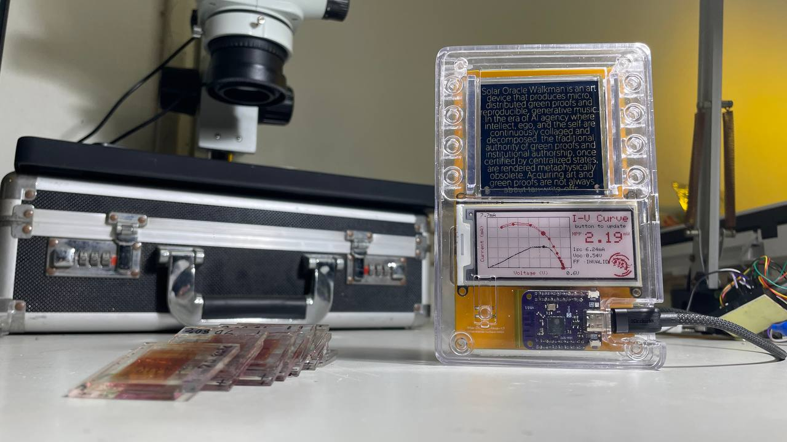
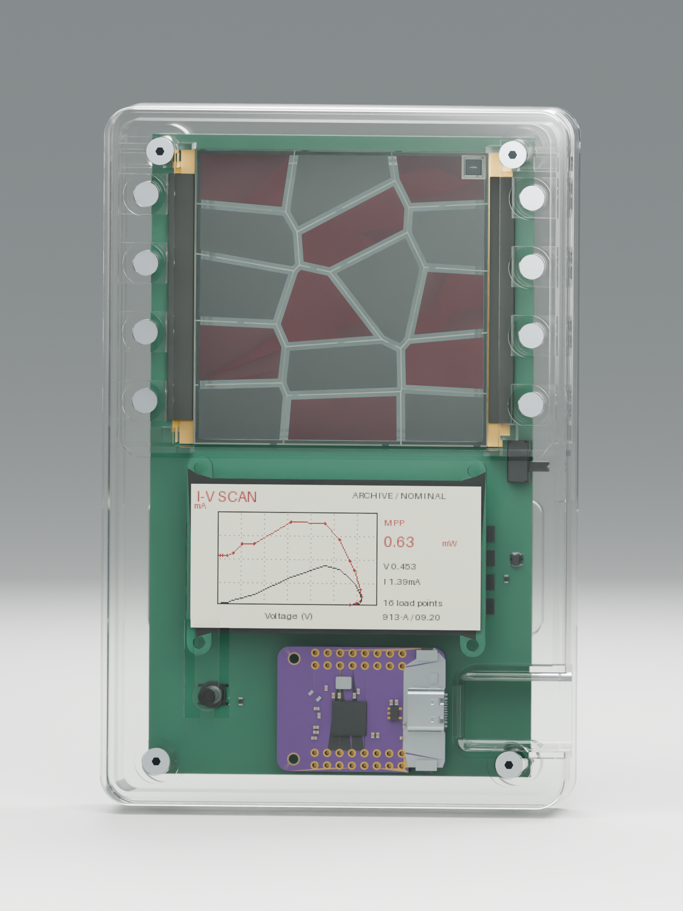
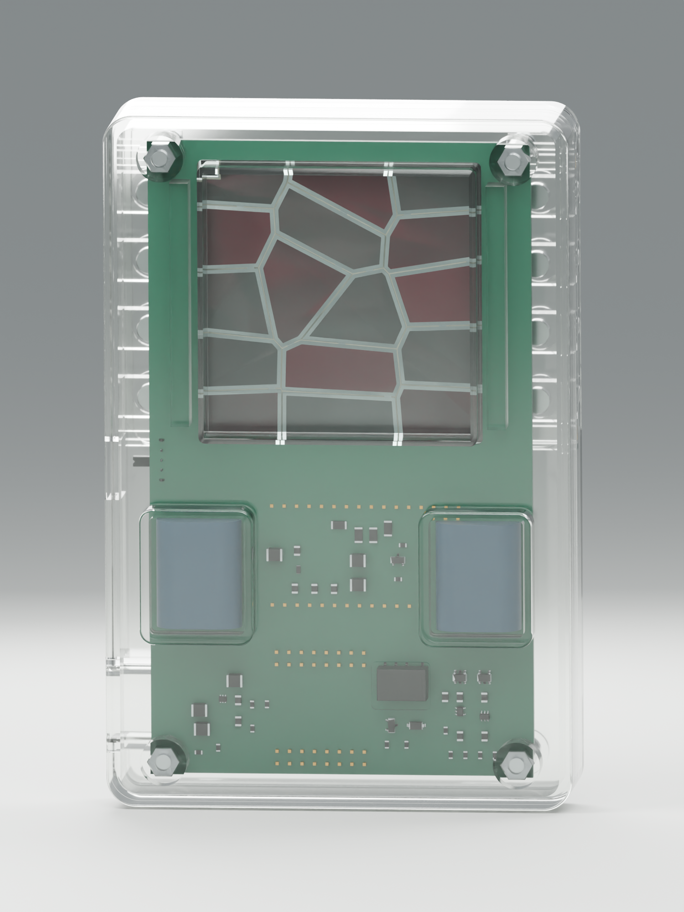
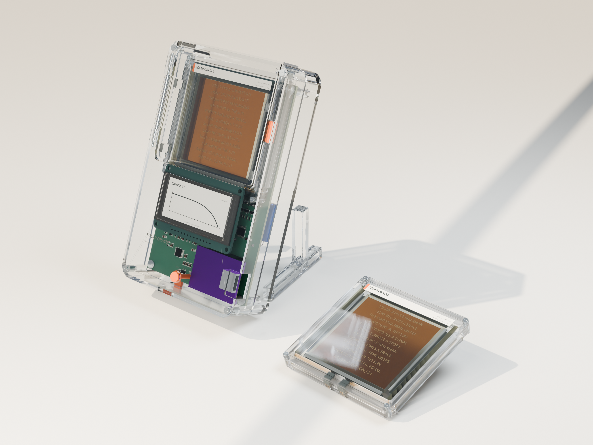
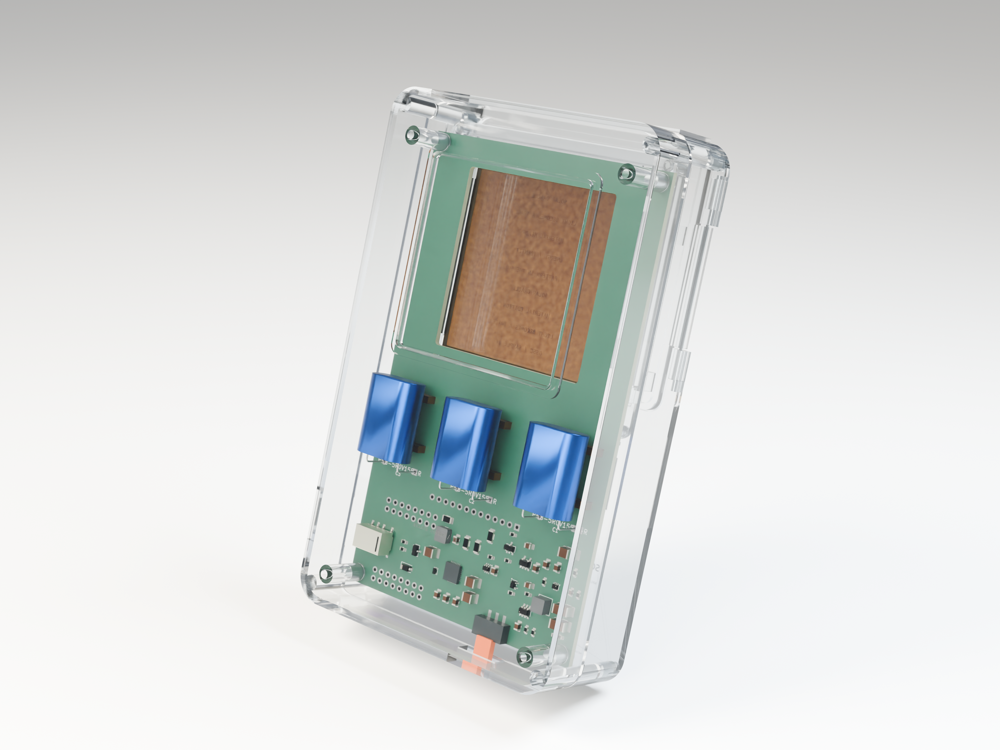

Solar Oracle Walkman 1.0
A portable instrument for exploring the electrical identity of handmade dye-sensitized solar cells.

Physical prototype. The photograph does not establish autonomous operation or calibration.
Build from editable sources
KiCad schematics and PCB layouts, local libraries, Gerber/drill files, BOM references, FreeCAD and STEP assemblies, two-part SLA print packs, Blender scenes, and board-specific firmware sources.
- CHARGE / ADG706: current two-capacitor charging hardware paired with R19_CHARGE_SUPERCAP. Complete charging firmware and physical qualification remain open.
- RAW / USB: the independent USB measurement board paired with R19_RAW. Its firmware has been compiled and checked against the current board; physical validation and calibration remain necessary.
Open development release, not a production-qualified kit. Both boards have zero unrouted connections and zero schematic/PCB parity differences, but retain ten courtyard-overlap DRC errors. Review the verification results and remaining engineering work before manufacture.
Charging concept — front and rear


Murata presentation renders, October 2026. The current manufacturing geometry is defined by the KiCad and R19 source files, not these illustrations.
Earlier three-capacitor concept


September 2026 design visualization. Distinct from the current two-capacitor revision.